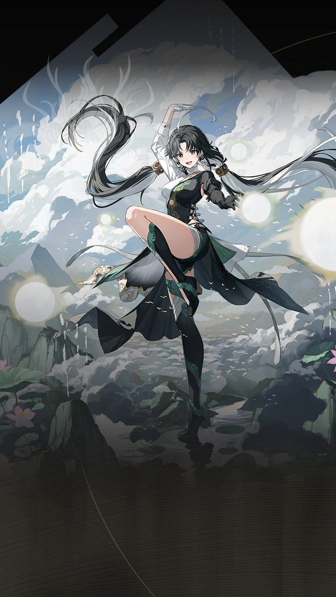

Wuthering Waves Resonator guide
Jianxin build, teams, weapons, and Echoes
Defensive comfort, grouping, and safer fights.
Personal notes
Optional profile-aware info that keeps the main guide unchanged.
No profile connected on this browser yet.
Log in above to load an existing WaveKit profile, or use the team helper to mark your Resonators and weapons for Jianxin.
Skill priority
Team compositions
 Main damageIunoLeads the damage plan
Main damageIunoLeads the damage plan Setup helperJianxinSets up the damage dealer
Setup helperJianxinSets up the damage dealer Support slotVerinaCompletes the team
Support slotVerinaCompletes the teamJianxin supports Iuno alongside Verina. Iuno can lead her own team. Lynae plus Mornye is the premium hypercarry core; Ciaccona, Yinlin, and Jianxin are documented alternatives, while Aero Rover is the free-form utility route.
 Main damageXiangli YaoLeads the damage planSetup helperJianxinSets up the damage dealerSupport slotVerinaCompletes the team
Main damageXiangli YaoLeads the damage planSetup helperJianxinSets up the damage dealerSupport slotVerinaCompletes the teamJianxin supports Xiangli Yao alongside Verina. Lynae is Xiangli Yao's strongest general buffer and enables Mornye's full Tune support. Yinlin remains the natural Electro/Liberation alternative; Changli is expert-only quickswap and is not ranked as a normal recommendation.
Use these grouped options to understand the wider roster around the complete teams above.
These characters appear in reviewed teams, but every possible combination is not guaranteed. Use the complete teams above as the safest starting point.
New player reading guide
If you are only checking Jianxin before building a profile, start by confirming their role, weapon type, Sonata, and whether they need a real healer or a specific helper.
Jianxin guide overview
Jianxin is an Aero Defensive Support in Wuthering Waves. Its recommended build starts with Verity's Handle, while its Echo plan uses Moonlit Clouds. The guide also covers stat priorities, compatible teammates, and a practical rotation.
Quick build
- Role
- Defensive support
- Team type
- Shield, Group
- Best weapon
- Verity's Handle
- Alternate weapons
- Moongazer's Sigil / Blazing Justice / Abyss Surges
- Sonata
- Moonlit Clouds
- Echo cost
- 4-3-3-1-1
- Main Echo
- Impermanence Heron
- Main stats
- CRIT Rate or CRIT DMG / Aero DMG or Energy Regen / ATK%
Stat priority
- Priority 1: Energy Regen for reliable Liberation grouping
- Priority 2: ATK% for shield and healing scaling
- Priority 3: CRIT Rate and CRIT DMG if building damage
- Priority 4: Resonance Liberation DMG Bonus
Resonance Chain overview
Each Resonance Chain level comes from duplicate copies of this Resonator. Expand a level for the exact in-game effect and use the short line for a quick read.
Playstyles and modes
Defensive support
Use her shield, grouping, and Liberation amplification for a safer, lower-pressure team.
Field-time damage
A flexible alternative for early accounts, though it asks for more field time than her support route.
Chain effects
R1Verdant BranchletAfter casting Intro Skill Essence of Tao, Jianxin gains 100% extra Chi from Basic Attacks for 10s.+
After casting Intro Skill Essence of Tao, Jianxin gains 100% extra Chi from Basic Attacks for 10s.
R2Tao Seeker's JourneyResonance Skill Calming Air can be used 1 more time.+
Resonance Skill Calming Air can be used 1 more time.
R3Principles of WuweiAfter staying in the Parry Stance of Resonance Skill Calming Air for 2.5s, Resonance Skill Chi Counter becomes immediately available.+
After staying in the Parry Stance of Resonance Skill Calming Air for 2.5s, Resonance Skill Chi Counter becomes immediately available.
R4Multitide ReflectionWhen performing Forte Circuit Heavy Attack: Primordial Chi Spiral, Jianxin's Resonance Liberation Purification Force Field DMG is increased by 80% for 14s.+
When performing Forte Circuit Heavy Attack: Primordial Chi Spiral, Jianxin's Resonance Liberation Purification Force Field DMG is increased by 80% for 14s.
R5Mirroring IntrospectionThe range of Resonance Liberation Purification Force Field is increased by 33%.+
The range of Resonance Liberation Purification Force Field is increased by 33%.
R6Truth from WithinDuring Forte Circuit Heavy Attack: Primordial Qi Spiral, if Jianxin performs Pushing Punch, enhanced Resonance Skill Special Chi Counter can be used 1 time(s) in 5s.…+
During Forte Circuit Heavy Attack: Primordial Qi Spiral, if Jianxin performs Pushing Punch, enhanced Resonance Skill Special Chi Counter can be used 1 time(s) in 5s. Special Chi Counter: Deals Aero DMG equal to 556.67% of Jianxin's ATK, considered as Heavy Attack DMG. Obtain a Zhoutian Progress 4 Shield (Benefits from Inherent Skill Reflection's bonus effect.)
Effect names, numbers, and conditions follow current public game-data records. WaveKit keeps the full wording available so important conditions are not lost in a tier label.
Simple play pattern
- Use Jianxin to make the team safer before difficult enemy strings.
- Treat defensive uptime as the main value, not only personal damage.
- Pair with a stronger carry when possible.
Build priority
- Difficulty
- Low stress
- Safety
- Defensive comfort
- Data note
- Guide checked
Jianxin is most valuable when their buff, element, or mechanic matches the carry you want to build.
Jianxin FAQ
What is the best Jianxin build in Wuthering Waves?
Jianxin's recommended WaveKit setup is Crowd Control Sub-DPS Build, using Verity's Handle, Moonlit Clouds, and Impermanence Heron as the main Echo target.
What stats should Jianxin use?
Start with CRIT Rate or CRIT DMG / Aero DMG or Energy Regen / ATK%. If the rotation feels uncomfortable, improve Energy Regen or defensive comfort before chasing perfect substats.
What teams work with Jianxin?
Jianxin is flexible, so the best team depends on the Resonators and weapons you own.
Is Jianxin beginner friendly?
Jianxin's current difficulty is listed as Low stress. If you are learning, pair them with safer sustain or defensive support.